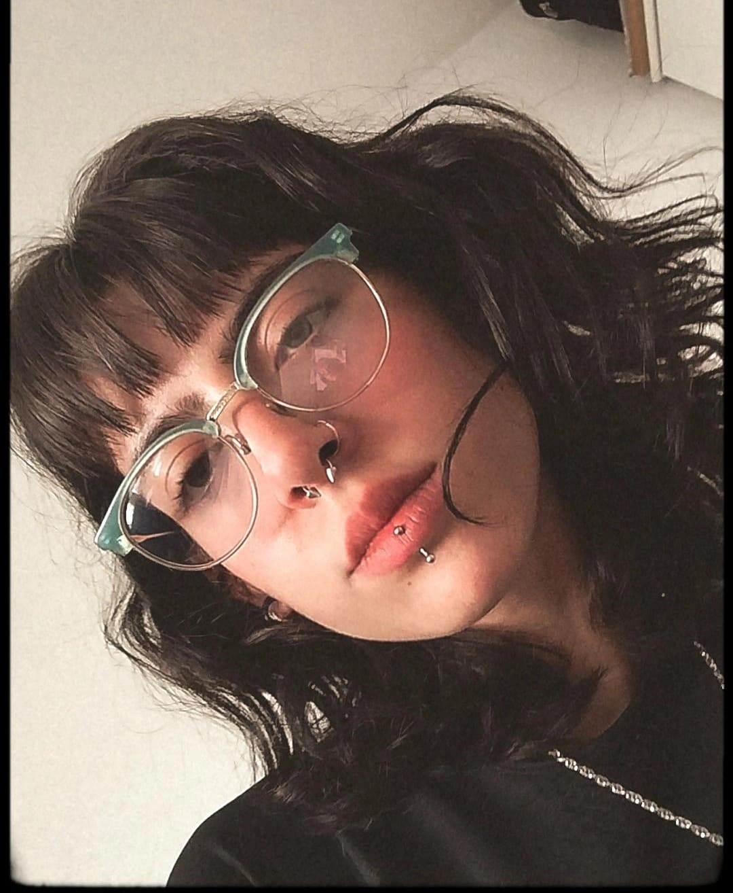

Ornella Romano
A lo largo de mi formación como desarrolladora front-end, he adquirido una base sólida en tecnologías clave para la creación de sitios web modernos y funcionales. Trabajo con HTML y CSS aplicando metodologías como BEM para mantener un código limpio y estructurado, y utilizo Sass para escribir estilos de forma más eficiente y escalable. Tengo experiencia implementando diseño responsive, asegurando que cada proyecto se adapte correctamente a diferentes dispositivos. Utilizo Visual Studio Code como entorno de desarrollo y gestiono el control de versiones con Git y GitHub, manteniendo un flujo de trabajo ordenado y profesional. Mi enfoque está orientado a escribir código claro, reutilizable y alineado con buenas prácticas de desarrollo. Me comprometo con la mejora continua y busco aplicar mis conocimientos en proyectos que combinen funcionalidad, estética y atención al detalle.
Antecedentes Académicos
Educación básica
Bachiller de Cs. Naturales Escuela Mutualista (2014-2020)
Educación Universitaria y terciaria
Universidad Nacional de la Patagonia
San Juan Bosco(en proceso)
Curso de HTML y CSS (FreeCodeCamp)
Carrera de desarrollo web full-stack
CoderHouse (en proceso)